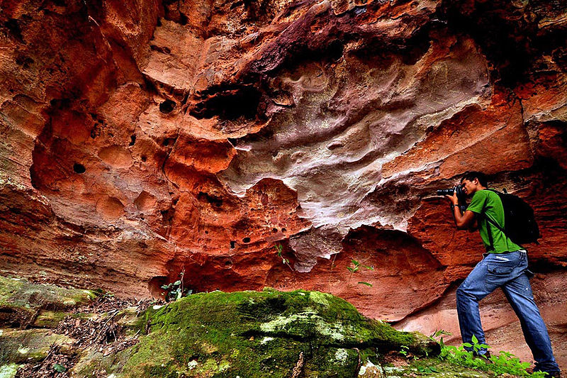
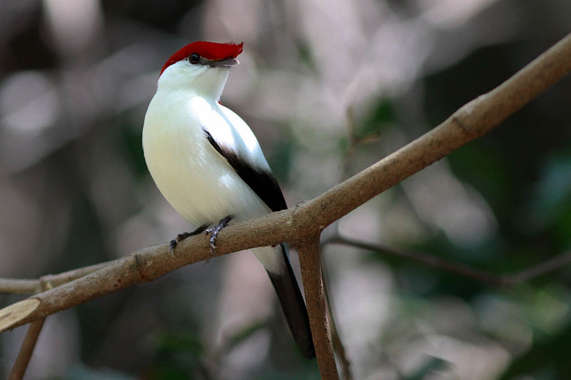
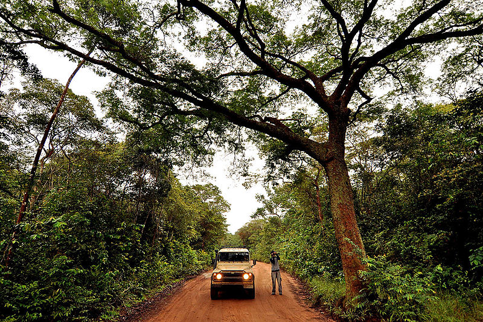

Informações técnicas sobre relevo, população, IDH etc.
| INFORMAÇÕES | |
|---|---|
| Municípios limítrofes | Potengi , Assaré . Santana do Cariri , Altaneira , Assaré , Campos Sales , Salitre , Antonina do Norte , Exu , Baixio , Ipueiras |
| Fundação | 3 de agosto de 1875 (145 anos) |
| Área total | 1099,93 km² |
| Clima | tropical semi-árido |
| PIB | R$ 82 296,733 |
| IDH | 0,564 (baixo) |
| INFORMAÇÕES TERRITORIAIS | |
|---|---|
| Número de habitantes | 20 685 habitantes |
| Superfície de Araripe |
109 993 hectares
1099,93 km² (424,69 sq mi) |
| Densidade populacional | 19,6 ha./km² |
| Altitude de Araripe | 608 metros de altitude |
| Coordenadas geográficas decimais |
Latitude:
-7.20158
Longitude: -40.0319 |
| Coordenadas geográficas sexagesimais | Latitude: 7° 12' 6'' Sul , Longitude: 40° 1' 55'' Oeste |
| INFORMAÇÕES DO MUNICÍPIO | |
|---|---|
| Endereço da Prefeitura Municipal de Araripe |
Araripe
Prefeitura de Araripe
Rua Alexandre Arraes, 757 Araripe - CE, 63170-000 Brasil |
| Telefone da prefeitura |
(88) 3530-1237
Internacional: +55 (88) 3530-1237 |
| Fax |
(88) 3530-1280
Internacional: +55 88 3530-1280 |
| Endereço electrónico da prefeitura |
pmafin@netcariri.com.br
|
| Site oficial do município | Araripe.ce.gov.br |
| INFORMAÇÕES DO ADMINISTRATIVAS | ||
|---|---|---|
| Prefeito de Araripe | CICERO FERREIRA DA SILVA | |
| Partido politico | PDT | |
| INFORMAÇÕES DE TRANSPORTE | |
|---|---|
| Transporte urbano disponível | Rodovias Estaduais e Nacionais |
| Aeroporto |
Aeroporto Regional do Cariri
84.2 km
Aeroporto de Picos
165.7 km
Aeroporto de Petrolina
247.7 km
|
| INFORMAÇÕES DE DISTÂNCIA A OUTRAS CIDADES | ||
|---|---|---|
| São Paulo : 1952 km | Rio de Janeiro : 1781 km | Brasília : 1286 km |
| Salvador : 663 km | Belo Horizonte : 1467 km | Manaus : 2263 km |
| Curitiba : 2254 km | Fortaleza : 421 km mais perto | Recife : 576 km |
| Belém : 1137 km | Porto Alegre : 2798 km | Guarulhos : 1931 km |
| Campinas : 1903 km | São Luís : 704 km | Goiânia : 1456 km |
| Distância calculada em linha reta! | ||
Conheça mais sobre a história da Araripe.
Em 1849, havia na povoação casas residenciais, apontando-se, entre elas, uma ainda existente à rua Alexandre Arraes, na qual foi celebrada a 1º missa da povoação.
Documentos do arquivo da Paróquia registram que no ano de 1871, seguinte ao da criação da freguesia (5 de novembro de 1870), o padre Henrique José Cavalcante, encontrando arruinada a antiga capelinha de Brejo Se construiu com grande massa de católicos a igreja matriz, hoje completamente destruída. Essa passagem revela que àquela época contava a povoação de Brejo Seco com apreciável contingente humano, atraído, na sua maioria, pela presença do ardoroso missionário
A capela de Santo Antônio da povoação de Brejo Seco, sede freguesia, compreendia os distritos de paz de Brejo Seco e Poço da Pedra, desmembrados da freguesia de Assaré. A freguesia de Brejo Seco foi instituída canonicamente pela provisão de D. Luís Antônio dos Santos, datada de 1 de dezembro de 1871 e provida a 10 do dito mês pelo padre Antônio Pereira de Oliveira Alencar.
Saiba mais sobre os melhores lugares e o que fazer em Araripe.
Dentre os poucos pontos turisticos de Araripe o que mais se destaca é um dos acidentes geográficos mais conhecidos do nordeste, trata-se da famigerada chapada do araripe. A chapada abriga uma floresta nacional, uma área de proteção ambiental e um geoparque.
Geoparque Araripe, no Ceará, o primeiro nas Américas, reconhecido pela UNESCO.
Soldadinho-do-araripe, espécie endêmica da região.
O turismo ecológico é um atrativo através das minúsculas estradas de terra que cortam a floresta.
Veja como chegar nos melhores pontos de Araripe
Essas rotas servem apenas para fins de planejamento. Obras, trânsito intenso, fatores climáticos ou outros eventos podem fazer com que as condições sejam diferentes dos resultados no mapa, por isso é preciso planejar o trajeto levando tudo isso em conta. Obedeça a todas as sinalizações ou avisos que aparecerem em seu trajeto.